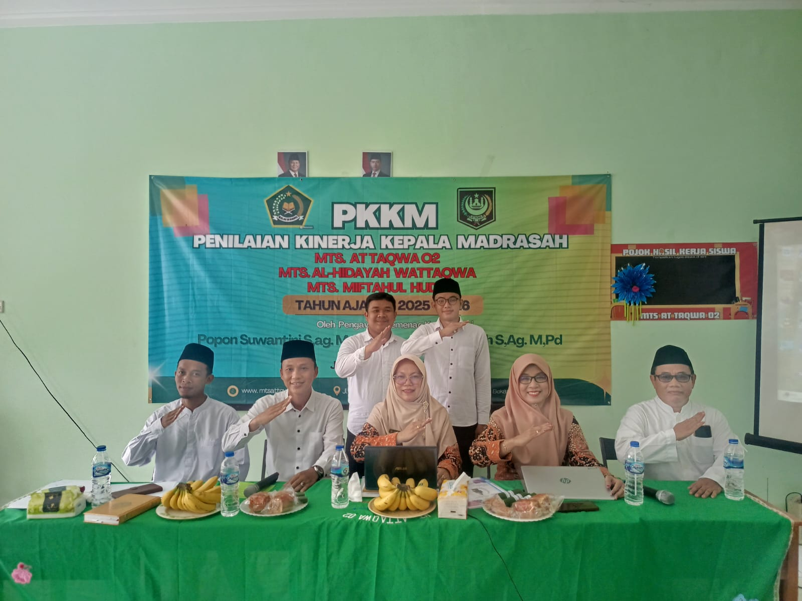
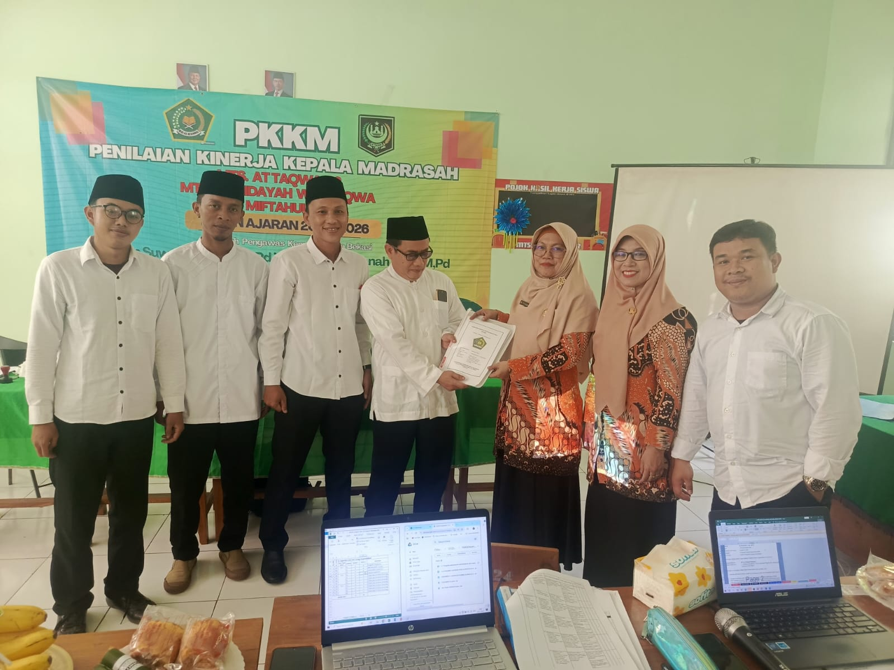
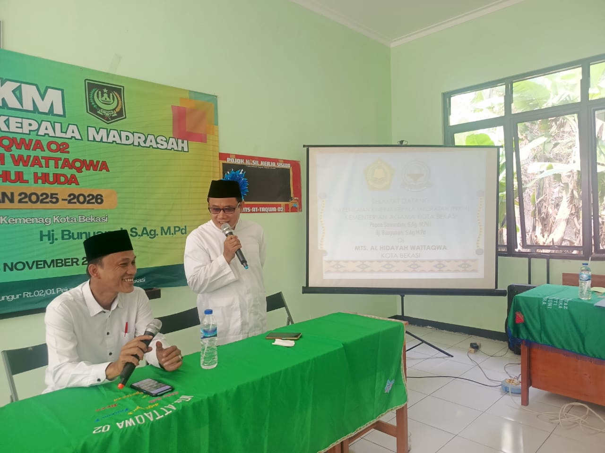
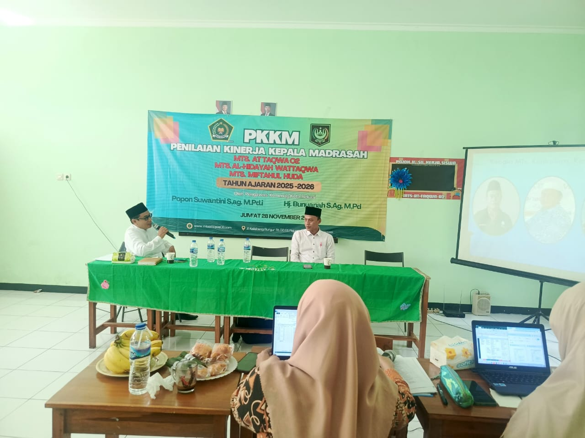
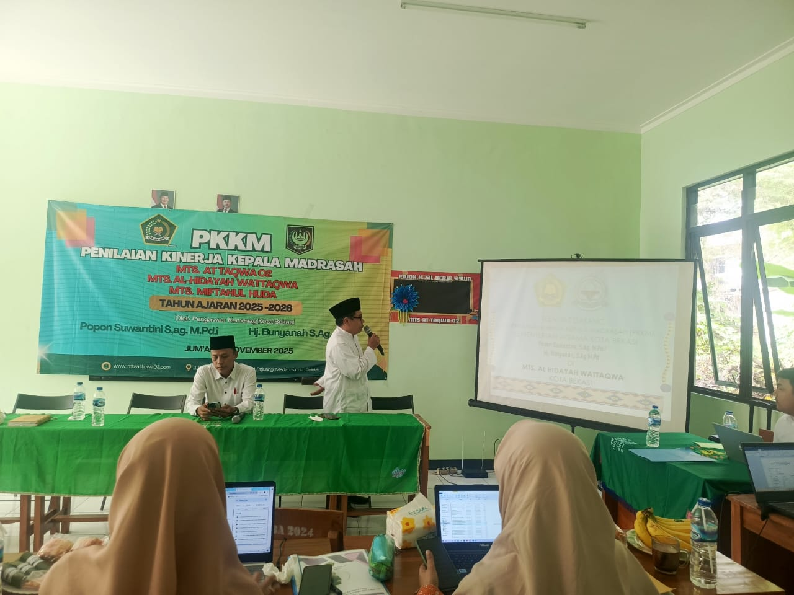
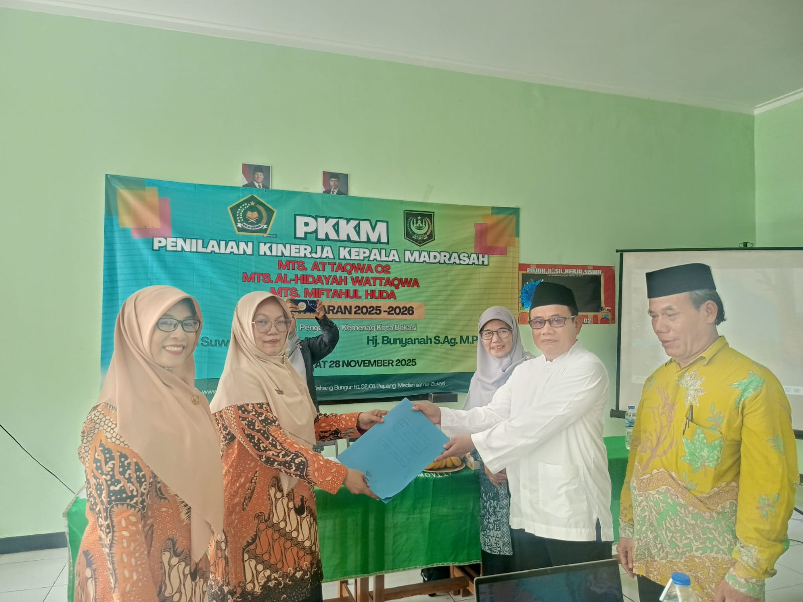
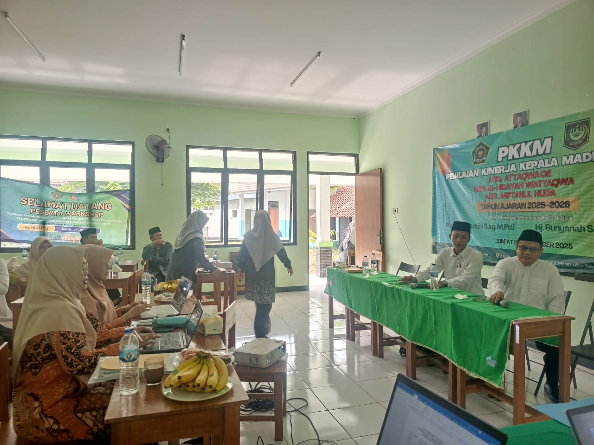
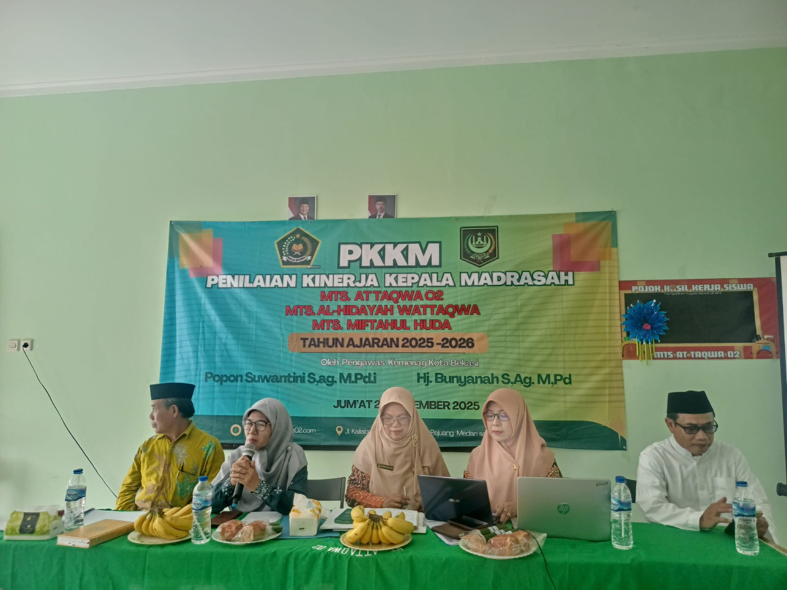
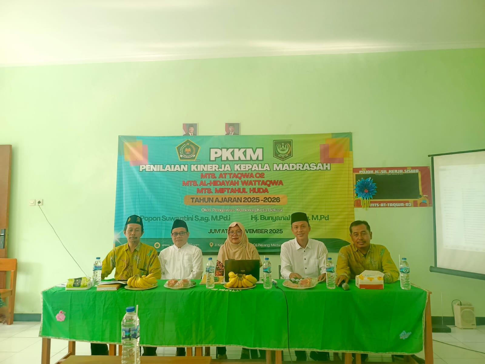

MTs Al Hidayah Wattaqwa Sukses Laksanakan Penilaian Kinerja Kepala Madrasah (PKKM)

MTs Al Hidayah Wattaqwa melaksanakan kegiatan Penilaian Kinerja Kepala Madrasah (PKKM) dengan lancar dan tertib pada hari Jumat 28 November 2025 di lingkungan MTs AT TAQWA 02. Kegiatan ini merupakan agenda rutin yang bertujuan untuk menilai, mengevaluasi, serta meningkatkan kualitas kinerja kepala madrasah dalam menjalankan tugas kepemimpinan, manajerial, dan supervisi pendidikan.
Tim penilai dari Kantor Kementerian Agama Kabupaten/Kota hadir untuk melakukan peninjauan langsung terhadap berbagai aspek kinerja, mulai dari pengelolaan kurikulum, administrasi, program kerja, hingga pelaksanaan supervisi kepada guru dan tenaga kependidikan. Seluruh dokumen pendukung telah disiapkan dengan baik oleh pihak madrasah sebagai bentuk kesungguhan dalam menjaga mutu lembaga pendidikan. Dalam proses penilaian, tim evaluator juga berdialog dengan guru, staf, serta kepala madrasah untuk menggali informasi terkait pelaksanaan program dan inovasi yang telah berjalan. Kegiatan berlangsung dengan suasana komunikatif dan profesional, mencerminkan komitmen madrasah dalam memberikan pelayanan pendidikan terbaik bagi peserta didik.
Salah satu momen yang paling menarik perhatian adalah penampilan seni dari siswi-siswi MTs Al Hidayah Wattaqwa. Dengan busana bernuansa tradisional, para siswi menampilkan tarian kreasi yang memadukan unsur budaya dan kekinian. Mereka tampil percaya diri di atas panggung dan sukses memukau para guru, siswa, serta tamu yang hadir.
Kepala MTs Al Hidayah Wattaqwa Bapak Maftuhin S.Pd.I menyampaikan bahwa kegiatan PKKM menjadi momentum penting bagi madrasah untuk terus berbenah dan meningkatkan kualitas, baik dalam hal manajemen maupun proses pembelajaran. Harapannya, hasil PKKM tahun ini dapat menjadi dorongan bagi madrasah untuk semakin maju, berprestasi, dan memberikan kontribusi positif bagi dunia pendidikan Islam. Dengan terlaksananya PKKM tahun ini, MTs Al Hidayah Wattaqwa bertekad untuk terus menjaga kinerja yang profesional serta membangun lingkungan pendidikan yang unggul dan berakhlak mulia.







